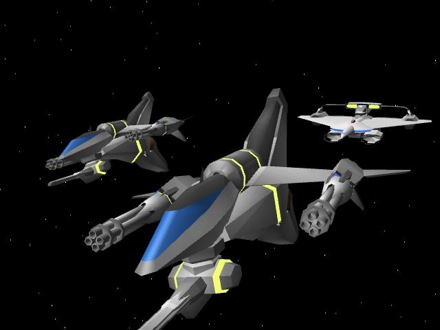
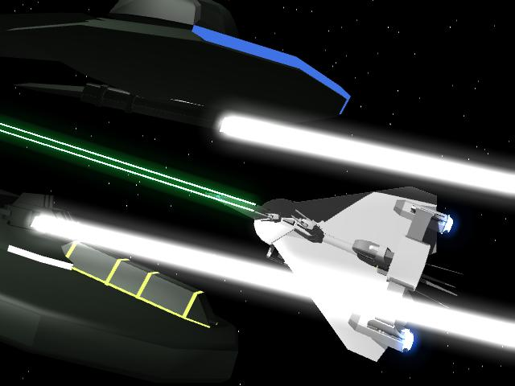
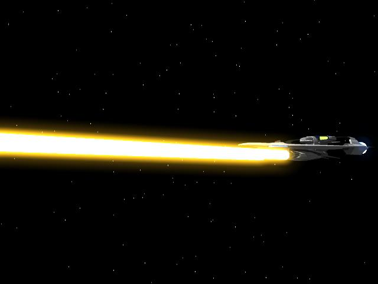
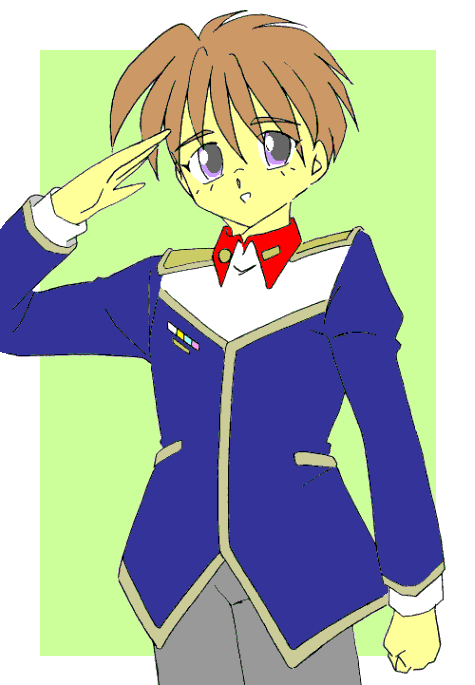
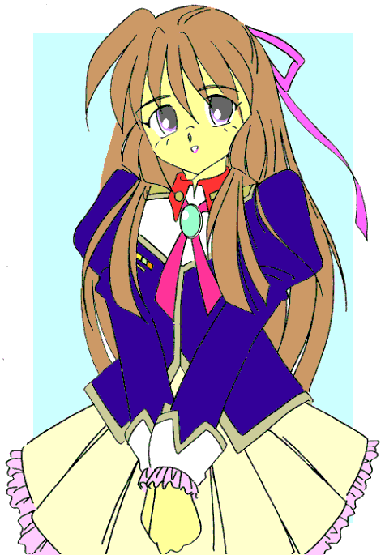

機動アイドル ミルキー・エンジェル ４
よっすぃー 作
第６章 起死回生の作戦
１
「メインエンジンをフライトデッキにつなぐ！？」
ミサキの第一声はそれだった。優希の提案は想像を絶するほど突飛だったのだ。
「無茶だ！」
「正気か？ オマエ」
ニックたちパイロットも呆れ返る。
「もちろん正気です」
が、優希は毅然と言い放つ。
「６基あるメインエンジンのうち２基の動力回路を、シールドしたままフライトデッキに直結するんです。３番と４番エンジンは隔壁が２枚あるだけでフライトデッキと繋がっているから、それを取っ払って巨大な砲身として使い、オメガ融合炉の全エネルギーをビーム砲に変換する。至近距離でぶっ放せば、あの超巨大戦艦の装甲に風穴を開けることも可能です」
優希の説明にミサキがその光景を思い描く。通常のブラスターは、戦艦クラスの主砲でも、せいぜいエンジン出力の２パーセント程度だ。それを一艦あたり１５から２０門の砲塔からぶっ放しているのである。優希の言うとおり、オメガ融合エンジンのエネルギーを１００パーセント収束して一気に放出すれば、確かに敵艦を撃破できるだろう。
しかし……
「理論上は優希クンの言う通りかも知れない。それだけの超強力なビーム砲が撃てるなら、勝機も見えると思うわ。でもそれは、机上の上の話よ」
ミサキに代わり、話を聞いていた涼子が冷静に否定する。
「机上の上って？」
「融合炉の全エネルギーを解放するビーム兵器なんて、要塞ならともかく艦船で使おうなんて前代未聞よ。撃った後にどんな影響が出るのか、予想すら付かないわ。しかもエンジンを直接エネルギー炉として使えば、出力不足で航行にだって支障をきたすでしょうし」
指を折りつつ整然と理由を述べる。彼女の言葉は常識的に見て至極当然だった。いかに強力な兵器といえども、艦船に搭載されている以上、艦が動いて連続使用出来なければ意味をなさないのだ。
「ええ、常識的に考えればその通りです。でも後のことを考えずに、エンジンの総括制御を止めて、一基一基単独で制御したらどうなります？」
「そんな常識外れな……」
突拍子のない意見に涼子の目が丸くなる。複数のエンジンを個々にマニュアルで操作するなど正気の沙汰ではない。
「でも、初期原子力ロケットの時代はやっていたそうですよ。ならばボクらに出来ないはずがないと思います」
優希が力説する。とりもなおせずその行為は、機関士と操舵士への圧倒的な負担増となるのだが、やってのけると言い切ったのだ。
「そりゃ、Ａ級パイロットやマクレガー少佐のような実力者なら、緊急時にはすることもあるだろうけど……」
「今がその緊急時です！」
「昔はやっていたのね。マニュアル制御」
優希の言葉をもう一度ミサキが問い返した。
「もちろん！」
力強く優希が頷く。
「じゃあ、賭けてみましょう。このまま黙って負けるより、勝負に出た方が後悔しないと思うわ」
「そうだな」
「賛成！」
「やろう！」
ミサキの問いかけに次々に賛同の声が集まる。
「決まったわね」
涼子が決を取り、ミサキが力強く宣言した。
「ただちにシルフィードの改造に取りかかって下さい。改造が完了次第、超巨大戦艦への攻撃を開始します！」
ミサキが高らかに宣言した。 作業終了と同時にオニールに具申したのだ。
しかしそれは、あまりにも突飛な作戦であった。
２
「と、待ちなさい。優希クンには他にやることがあるわ」
ニックたちについて隔壁撤去の手伝いに行こうとした優希は、メグミに呼びつけられた。
「他にやること？」
胡散臭いセリフに怪訝そうに首をひねる。粒子砲の発射以外に大事なことが、今のシルフィードに果たしてあるのだろうか？
「もぅ、しゃきんとしなさい！ これからディラングの大艦隊と一戦交えるんでしょ？ そんな格好じゃダメじゃない」
わざとらしく優希の服をつまむ。艦内作業に赴こうとしていた優希の服は言うまでもなく白のつなぎだ。それもロッカーに置いてあったのを適当に引っ張ってきたので、当然のことながら油まみれの汚れた服だった。
「そりゃ着替えますよ。この服でブリッジに座る訳ないじゃないですか」
「って、あの服？」
ジト目で見るメグミ。もちろん不満たっぷりで。
「連邦の士官服ですよ。当然の格好でしょ？」
確かに艦船のブリッジでは、ネイビーブルーのブレザーにグレーのスラックスかスカートの連邦軍の服装着用は常識だ。が、そこには落とし穴があって、「原則として」の一文が付いており、シルフィードのクルーであるミルキー・エンジェルたちは、その「原則」から大きく逸脱する。
「それは普通の艦船での話ね。でもシルフィードにはシルフィードの流儀があるわ。あたし達の盛装は優希クンが思っている服じゃないわ」
そう言うと有無を言わさず優希を自室に引っ張り、クローゼットからごそごそと一着の衣装を取り出した。
「今から行うのは一世一代の大勝負よ。当然シルフィードの勇姿、ブリッジでの艶姿は連邦軍全ての艦船に中継する。そんな訳だから目立たない地味〜っなスーツ姿じゃダメなの」
それでこれ？ 衣装を見て優希がのけぞった。
用意された衣装。単なる女装でも十分以上に恥ずかしいのに、この衣装ときたらエナメル地の短い上着に同じ素材の超ミニスカート、黒のロングブーツと意味の無いカフスがあるその姿は、どう見てもレースクイーンかイベントコンパニオンといったいでたちであった。
「今までのイベントの中で一番受けがよかった衣装よ。これでみんなの士気を飛躍的に高めることが出来るはずよ。だから、ねっ」
これに着替えろとプレッシャーをかけているのだ。
だからって、優希の性別はまがりなりにも男である。素直に「はい」と言えるはずが無い。
「無理ですよ！ 女装だけでも十分恥ずかしいのに、そんな……おへそまで丸見えのきわどい衣装なんて」
「プローポションに自信が無い？ 胸が少ないこと？ 優希クンの容姿ならそんなことは些細な問題よ」
そういう問題じゃない！
「そうじゃなくて……」
「時間が無いから急ぐわよ！」
毎度のことながら優希の主張は完全に無視され、あれよあれよという間に着替えさせられていく。
「はい、被って」
例によってかつらを被せられ、いつも以上に丁重にブラッシングさせられる。天使の輪が出来るほど艶やかに梳かれると、少年という面影は皆無となり、活発な印象を与えながらも凶悪な美貌の美少女が現れた。
「わぉ。やっぱり可愛いと、何を着ても似合うわね♪」
女装姿を褒められても嬉しくは無いのだが、「その姿で頑張れば、みんなのモチベーションが上がる。ひいては地球の勝利に導く大事な事項なの」と言われたら、たとえどんなに理不尽な要求でも同意するしかない。優希は甚だ不本意ながら、その服を着たままブリッジに向かった。
「……まさか？ 優希クン？」
リフトドアを開けて入ってきた美少女に、ブリッジの空気が固まる。それが誰かということは既に認識はしているのだが、その予想を打ち破るほどに可憐で美しかったのだ。
「ふ、不本意ながらボクです」
誰かが呟いた声に、不承不承優希が答える。
「いや〜ん。可愛いわ」
間髪入れずにミサキが抱きついた。
それがまるで質問ＯＫの合図の如く、ブリッジクルーが優希のもとに集まってくる。
普段の女装姿の優希も可憐だが、メグミの用意した勝負衣装は、そんな言葉で言い表せないほどの美しさを放っていた。
「完全に負けた」
いつの間に着替えたのやら。優希と同じ衣装を着ていた他のメンバーも霞んで見えていた。
「誰だ！ 『男かもしれない』なんてバカな噂を流したのは？」
改造工事終了の報告にブリッジに上がっていたニックが、優希の艶姿を見て絶句する。
どこでどう聞きかじったのか？ 優希は「実は男の子なんだ」という噂を耳にしていたのだ。
ホントは噂ではなく事実なのだが…………
「優希クンが男の子？ 冗談でしょ！」
ニックの言葉を完全否定するように、メグミが大真面目に反論する。
「どこをどう見たら男の子なの？ 見て、このきれいな脚線。スレンダーなボディーライン。胸のボリュームこそ無いけれど、これだけの美少女を男と間違えるなんて、絶対あり得ないことだし、そんな行為は神への冒涜よ！」
「メグミさん！」
嫌々着ているんだから、勝手に女の子にしないでくれ……心の中でそう叫んだが、周りがそれを許してくれなかった。
「そうだ。根も葉もない噂にひっかかるニックが悪い」
「ひっかかるか？ ふつう」
荒垣ら他のパイロットも優希の艶姿に魅入られている。
「そんなに見ないでください。この格好、恥ずかしいんだから」
恥ずかしさのあまり短いスカートを引っ張り、頬を真っ赤にして身をよじる。その仕草が一層可愛いらしく、この場では全く逆効果だった。
３
「にわか作業者がやったぶっつけ工事だ。優希のアイデア通りに、とりあえず撃てるようにはしているが、射程距離やビームの収縮率など、そんなことは撃ってみないと一切分からない！ 効果を得るためには、出来るだけ至近距離に寄って撃つ必要がある！」
なんとか場が収まると、工事指揮をしたマクレガーが口を開いた。
「つまり、理論値が分からないってことですね」
ミサキが問い返す。
「有体に言えばそういうことだ。ついでに言うと、砲身も撃てるだけで耐久性の保証は全然ない。ちょっとでも勝てる確率を作ろうと思えば、無茶をするしかないんだ」
「シルフィードを改造した時点で無茶は十分しているわ。今更ひとつふたつ不安が増えたところでどうってことないです」
マクレガーの憂慮に、にっこりと笑い不安を打ち消した。
もう迷わない。強い意志の表れでもあった。ミサキは一度大きく頭を振ると、右手をすっと前に差し出した。
「総員、第一種戦闘配置。これよりシルフィードは発進します。目標、敵超巨大戦艦！ビーム砲に用いる３番４番エンジン以外は、出力全開にしてください！」
「了解！」
シルフィードのエンジンに再び火が点り、猛然な勢いで加速していく。
「くっ……」
艦内の重力加速度が加わり、ブリッジクルーの、いや、シルフィードに乗艦している全てのクルーが、唇を噛み身体をシートに押し付けられる。本来なら加速Ｇを打ち消し作動するはずの重力スタビライザーの動力も、全てエンジン出力に回しているのだ。
前方に無数の光の明滅が見える。超巨大戦艦によって蹂躪されている戦場だ。シルフィードは一気にその空間に飛び込んだ。
地球連邦の旗艦グローリアのブリッジは騒然としていた。
突如現れた超巨大戦艦に多数の僚艦が撃破され、グローリア自身も小破しているのだ。
「１１７攻撃部隊、応答せよ！」
「２６宙挺部隊より入電。『援軍を請う』繰り返し入っています」
「駆逐艦ワルキューレ撃沈。ゆうなぎ大破、自力航行不能。戦艦ミズリー中破！」
「２４部隊の戦力、６５パーセントに低下！」
ブリッジ下部のオペレーションルームには、ひっきりなしに入る僚艦の被害報告に、オペレーターたちがパニック寸前に陥っていた。
連邦軍一沈着冷静と言われるオニール中将も、動揺を隠し切れずにいた。つい２時間前までは我が軍が有利に戦っていた戦闘。それがたった一隻の超巨大戦艦の出現で、形勢が一気に逆転してしまったのだ。
すでに自軍の４０パーセントは、撃沈または大破による、戦闘継続不能の事態に陥っている。このまま戦闘を継続していけば艦隊の壊滅は必至だろう。
「通常なら引くべきだが……」
オニールは大きく首を振る。ここで我々が引くわけにはいかない。この土星防衛線を抜けると、地球までの距離は僅かしかない。連邦が体制を立て直す間も与えず、勢い付いたディラング軍は、一気に地球本星まで進軍するに違いない。絶対に引けない戦なのだ。
「本艦の損害はどの程度だ？」
「第１８・２４・６７ブロックに被弾。右舷ミサイルランチャーの一部が使用不能です」
副官のブリッドが即座に報告する。
「そうか……」
そう言うと暫し目を瞑り、瞑想に耽る。実際にはほんの数秒のことだが、オニールにとっては数時間にも及ぶ長い葛藤だった。
やはり、それしか道は無い。オニールはブリッドの方に向き直った。
「ブリッド君」
「はい？」
「君は直ちに下艦し、セドリックに移乗するように。たった今から旗艦権限をセドリックに移す」
「提督！」
たまらずブリッドが訊き返す。それほど信じられない命令なのだ。
旗艦権限の委譲。
連邦艦隊のマニュアルにその項目は確かに存在する。だがそれは、旗艦が撃沈または航行不能の状態に陥ったときに行う緊急コードであり、今のような五体満足の状態で発動するものではない。
「反論は許さない。君が今から指揮をとるんだ。本艦はこれより敵超巨大戦艦との決戦に赴く」
毅然として言い放つ。あの敵とやり合える戦艦はグローリアのみ。オニールは刺し違えるつもりで砲雷撃戦を決意したのだ。
「移譲用シャトル出せ。本艦は１０分後に出撃する」
ひとしきり指示を与えると、オニールはキャプテンシートに腰をおろした。出撃までの僅かな時間、再び瞑想に耽けようとした。
その時……
「提督。シルフィードの永井ミサキ中尉から緊急連絡です」
通信士官が指揮系統を一切省略して報告してきた。
「シルフィードの？ ミルキー・エンジェルは無事だったのか？」
「はい。なんでも超巨大戦艦攻撃にかんして具申する作戦があるとか……」
作戦？ どんな？ オニールは首を傾げたが、なによりもまずミルキー・エンジェルのメンバーが無事だったことに安堵した。彼女らがいるかいないかで前線の士気に大きく影響する。まず無事な姿をみんなに知らせるべきかもしれない。
「作戦を聞こう。通信を開いてくれ」
「了解」
復唱と同時に画面が開き、ミサキが敬礼をしたまま待っていた。
『広報部独立艦隊シルフィード搭乗員、永井中尉です』
「オニールだ。とにかく無事で何よりだった」
『はい。しかし、エバンス艦長を始めとする運行クルー、クルスト指令率いる随行艦隊が全滅。被害は甚大です』
「残念な報告だが、事態は逼迫している。詳細な報告は後で聞く。具申項目を聞こう」
『その件ついては発案者に代わります』
そう言うとカメラが切り替わった。そこに映っていたのは、セミロングのボーイッシュな美少女。見慣れない顔だが、ミサキと比較してもなんら遜色は無く、溌剌さではむしろ凌駕しているのではないだろうか？ 緊張した面持ちでオニールを見つめていた。
『沖田優希臨時准尉であります。時間がないので、作戦内容を簡単に言います。シルフィードのオメガ融合エンジンをビーム砲にして、敵超巨大戦艦に至近距離で発射するのです』
「なにっ？」
オニールが目をむく。
「そ、そんなことが可能なのか？」
奇天烈な作戦内容に副官も驚愕の色を隠せない。
当然だ。ミサキたちも最初に作戦内容を聞いたときには、自分の耳を疑ったほどの突飛なプランだったのだから。
「可能です。既にシルフィードの改造は完了しています」
「無茶だ！ そんな作戦」
「出来るはずが無い！」
居合わせた参謀たちは口を揃えて不可能を連発する。相手は第７艦隊が一点集中攻撃を試みても突破できなかった相手である。それをただの巡洋艦、軍の広報部隊に過ぎないシルフィードが攻略など不可能に決まっている。彼らは競うようにマイナス材料を列記し、オニールに具申する。
「例え理論上で可能であっても、そんな急ごしらえの兵器でどこまで信用できるのかね？ 収縮調整すら出来ない砲で？ ビームの減衰を考えると、３００キロを切るような至近距離で撃たなければ効果はあるまい」
参謀のひとりが更に否定的な意見を列記する。確かにそうかも知れない。そうかも知れないが、なぜ否定的な意見だけを出すんだ？ 今は反対意見を出すときじゃないだろう。
『出来ます！ シルフィードなら至近距離に接近は可能です！』
批判的な答えしか返ってこない参謀連中に優希は怒鳴る。
「精鋭の第七艦隊ですら出来なかったんだぞ！」
「根拠がどこにあるんだ！ お前たちのような素人に……」
再び激しく突きつける反対意見。艦隊の……いや、地球の命運がかかっているというのに、そんなことを議論するのではなく「どうやったら出来るか？」を考えるのが参謀の仕事ではないのか？ 優希は怒りにも似た感情を抱いた。
『やりもしないで、どうして出来ないと言い切るのですか！ シルフィードのオメガ融合エンジンは、大型戦艦用のが搭載されているんです。それが６基も！ ２基潰したって並の高速巡洋艦より遥かに速い。その足を活かせば絶対に出来ます！』
「メインパイロットもいないのにか？」
逆なでするようになおも否定的意見を問う。
『パイロットならいます！』
遅々として進まない議論に、ミサキが割り込んで優希を指差した。
「パイロットがいる？ 操艦経験があるくらいではパイロットとは呼べないぞ」
『優希クン……いえ、沖田臨時准尉はパイロットの資格を有しています。それもA級ライセンス保持者です。絶対にうまくいきます！』
「しかし……沖田臨時准尉では経験が不足しているのでは？」
尚も渋る参謀連中。すでに彼らの思想の中には、玉砕戦法以外に有効な選択肢が残っていないのだ。
『経験の有る無しじゃないんです！ やるか、やらないか？ そのどちらかでしょう！ 許可が無くてもボクたちはやります！』
「待ちたまえ。それでは軍規が維持できない」
「待つ必要は無い。沖田准尉の作戦を許可する。連邦艦隊は全艦を挙げてシルフィードの援護に回る」
「提督！」
オニールの決断に、参謀が異論を具申しようとする。が、彼はぴしゃりと言い放つ。
「沖田准尉の意見はもっともだ。具申した作戦の反論など誰にでも出来る、それは参謀の仕事ではない！ 諸君らに期待するのは「１パーセントでも可能性の有る」プランだ！」
参謀たちを厳しく叱責すると、オニールは再び通信モニターに向かい直した。
「キミたちの具申している作戦は大変危険な作戦だ。成功する可能性は極めて低い。が、私が取ろうとしている特攻作戦も、勝機はきわめて低く、特攻など作戦としては愚の骨頂。艦隊を預かる提督として恥ずかしく思うよ」
そう言うと深々と頭を下げた。下げた上で改めて命令を伝える。
「作戦変更。シルフィードに敵超巨大戦艦殲滅の任に就くことを要請。貴艦のブリッジは艦隊全艦に中継し、士気高揚と意思統一を狙う。本艦以下全艦隊でシルフィードを援護する。以上だ」
『了解！』
ミサキ以下、シルフィードのブリッジクルー全員が敬礼をして応えた。
「早速作戦を実行します。みんな持ち場について！」
ミサキが命令を伝える。
優希も早速操舵席に着こうとするが、その足を通信画面のオニールが呼び止めた。
『あーっ、沖田准尉』
「はぃ？」
『ひとつ言い忘れていた。キミのような可愛い女の子が「ボク」と言うのはあまり誉められないな。私的にはボクっ娘は、活発でなかなか萌えるのだがな』
悪戯っぽく笑うと、グローリアからの通信が切れた。後に残ったのは、ブラックアウトしたモニターを見つめる優希の苦笑いだけ。
いつのまにか彼を囲むように、ミサキに涼子やブリッジクルーが集まっていた。
「良かったね、優希クン」
「提督もあなたのファンよ」
「魔性の女ね」
「よっ。オヤジキラー」
ホントにこの艦は戦闘前だろうか？ 緊張感が微塵も無いブリッジだった。
第７章 艦隊決戦
１
『悪いがちょっと頼みがある』
発進のためカタパルトに移送中のシンが、オペレーターの花梨に声をかけてきた。
「なんですか？ シン中尉」
発進準備中のパイロットの頼みごと。余程のことがあるのかと花梨が耳を立てると、シンはとんでもないことを要求した。
『重要な任務だが内容は至極簡単だ。エコーを効かせながら「Ｆｏｕｒｔｈ Ｇａｔｅ，Ｏｐｅｎ」と言って欲しい。出来れば２回繰り返して』
「はぁ？」
『理由は訊くな。こういう出撃の際の決まりごとだ。発進口に滝がないのは残念だが、この際やむ得ないだろう』
呆気に取られる花梨を尻目に真顔で答えるシン。シンの要求に対して彼女は一切無視してカタパルトの射出ボタンを押して応える。 恨み節を叫びながら発艦するジャスティス。彼の美学は理解されなかったようだ。
『２番機、荒垣。ジャスティス、行きまーす！』
荒垣は荒垣で、射出される瞬間に奇声を発する。
ちなみに、続く朴とニックも似たり寄ったりだったりする。困った連中だ。
「ったく。この人たちは命がけの作戦ていう気概がないんですよ」
心底あきれ果てて、花梨はミサキに意見を求めていたのである。
「大丈夫。あの人たちは、ああやって緊張感を紛らわせているのよ」
多少あきれてはいるが、「まぁまぁ」とたしなめながらミサキが答えた。
「一見Ｃ調に見えても、ひとたび戦場に出ればあの人たちは心強い援軍よ。多少のわがままは大目に見てあげなさいよ」
「そうですかぁ〜」
Ｃ調と言うより「バカ」なんだけど。それを口に出さないのは、花梨も一応大人なので。
そうこうしている間に４機のジャスティスが側面に展開する。彼らは文字通りシルフィードの盾となって護衛に当たるのだ。
「そりゃ確かに、心強いですけど……そういうもんですか？」
「そういうもんよ」
力強くうなずくミサキに、いまいち納得できないという表情の花梨。
『雑魚は俺たちが一手に引き受ける。気合入れて、あのデカブツに一撃を喰らわせろ』
その心配を打ち消すかのように力強く宣言するニックたち。
が……
『で、優希は何をしている？』
「何をって、操縦ですけど？」
『歌はどうした？』
いきなり意味不明の要求をするニック。
『巨大戦艦に向かって突撃するときは、ブリッジの中央でアイドルが唄うのが常識だろうが！』
「どこが常識なんです！ そんなことしたらシルフィードを飛ばせないじゃないですか！」
コンソールに突っ伏して優希が返答する。もう答えるのが嫌だと言わんばかりの疲れようだ。
「優希クンにこれ以上のストレスを与えないでね。どうしても！ って言うのだったら、代わりにわたしが歌ってあげます」
「それこそ非常識よ」
優希をかばったミサキの提案に今度は涼子がクレームを述べる。
「冗談じゃないわよ！ ミサキがソロで唄ったら、その騒音でみんなの士気が落ちるじゃない！ イベントの時だって、こっそりマイクのボリュームを下げるのに、ワタシがどれだけ苦労していると思っているの？」
「ええっ！ そんなことしていたの？」
「だって聴くに耐えないんだもん」
「聴くに堪えないってどういうことよ！」
「言った通りよ」
「そっちのほうが非常識じゃない！」
「副官として当然の配慮よ」
『わかった、わかった。もう無理な要求はしないから、早いところ戦闘スタンバイに入ってくれ』
ミサキと涼子の恒例の口ケンカに、原因を作ったニックが止めに入る。なにかきっかけがあると直ぐに口ケンカを始める、この二人の性格を掴んでいなかったニックの敗北であった。
「お遊びは終わりよ。これよりシルフィードは戦闘に参加します！」
さっきまでのおちゃらけムードを一変すべく、毅然とした口調でミサキが宣言するが、時既に遅かったかも知れない。

「邪魔者は力ずくで排除する！」
ニックのジャスティスが軸線上の敵機を撃破した。
「俺の前に道は無い。俺の後に道は出来る」
「おぃおぃ。そのセリフ、著作権にひっかかるぜ」
「喋るだけなら違法じゃないさ」
荒垣とも掛け合い漫才をしながら、ニックは飛び交うミサイルを次々と墜していった。朴とシンが後方を固め、シルフィードの周囲を、それこそ露払い太刀持ちの如く取り囲んで護っていた。
「とにかく。シルフィードにはただの一発もミサイルを当てるな！」
「任しておけ！」
４人のナイト？ に囲まれ、シルフィードは鬼神のような勢いで突進を始めた。
「方位１−７−８にソルドップ級戦艦１。同じく２−４−６にイーゲル級巡洋艦２隻。本艦に向かって進撃中！」
ブリッジにレーダー担当のクリスの声が響き渡る。今、彼女はシルフィードの目となり耳となり、五感の全てを研ぎ澄まして索敵に全神経を集中させていた。
「主砲連続発射。振り切って！」
クリスの報告にミサキがすかさず指示を出す。
「了解」
間髪置かず涼子が復唱。
シルフィードの主砲から幾重ものブラスターが放たれ、軸線上の敵艦に命中する。火力で劣る巡洋艦の主砲ではソルドップ級の堅牢な装甲を打ち破ることは出来ないが、敵艦の動きが鈍った隙に、シルフィードは文字通り疾風の如くすり抜けていった。
「雑魚の攻撃には構わないで。目指すのは、あの大物だけよ！」
キャプテンシートからミサキが一点を指差す。その遥か前方には超巨大戦艦が対峙していた。
彼我の距離は５００００キロ！ 威力は保証できても、やっつけ急造の巨大砲塔である。射程距離と命中精度に保証は全く無い。
「まだダメ、遠過ぎるわ！ へっぽこ参謀の言うとおり、３００キロまで近づかないと、あれを発射するわけにはいかないの！ エンジン出力は全開で固定。前進を止めちゃダメよ！」
ミサキが再度前方に腕を振る。
もっと前に！ もっと急いで！ 今の彼女が出来るのはクルーを鼓舞する、ただそれだけだった。
「右舷、一時の方向。戦闘機編隊。総数１２機」
「艦首ミサイル一斉掃射。ニック中尉、排除お願いします！」
『任しておけ！』
その言葉通り艦首ミサイルが打ち漏らした４機の戦闘機を、ニックたちは僅か３０秒で屠っていった。この激戦の中、攻撃を回避するだけでも大変なのに、シルフィードを防御しつついともたやすく敵機を撃ち落す。その確かな腕前に、あらためて彼らの優秀さを思い知る。
「高熱源帯接近。敵のブラスターです！」
「取り舵、回避！」
呼応するように、優希が舵を左に切る。その瞬間、鋭い輝線がシルフィードの船腹を掠めていった。装甲板のビームコートポリマーが蒸発し、パールホワイトの塗装にどす黒い跡が付いたが、優希はしゃにむに前進を続ける。
「被害は？」
「ありません」
「分かったわ。前進を続けて！」
ミサキがきっぱりと指示を出す。以前のような人当たりはいいが気弱な面は、今の彼女には微塵も無い。その瞳には強い意志があった。
あの超巨大戦艦を倒す。
未来のために血路を開く。余計なことを考えるのはそれからだ。
「加速を維持。絶対に一発撃ち込むのよ！」
シルフィードのエンジンが唸りをあげた。

優希は一心不乱にシルフィードの舵を握っていた。学生の身分だからとか、経験が無いからなんて、言い訳出来る状態じゃない。今自分が出来ることをやる。シルフィードのメンバーはみんなそんな思いで進軍しているのだ。
進め！ 進め！ もっと早く！ もっと深く！ もっと近づけ！ 心の叫びを代弁するかのようにエンジンが唸りを上げる。
「十時の方向からミサイル接近。雷数３！」
「面舵一杯！」
「面舵します！」
舵を思いっきり右に切り、左側面のスラスター目一杯を噴かす。
シルフィードは鋭角的に右に曲がり、もといた進路をミサイルがなでていく。
「油断しないで。第２派がすぐに来るわよ！」
「了解」
ミサキに指摘されるまでも無く、優希は細かく舵を動かしていた。盲目的に真っ直ぐ前進するのではなく、ランダムに艦を動かしながら進撃する。こんなトリッキーな動きは、艦載機が用いる操縦法で、艦船が使うものではない。しかしこの一見無駄に思える操舵が、敵の攻撃を回避するのにきわめて有効なのだ。
とはいえ、だんだん厚くなるディラング軍のディフェンスに対して、優希の回避テクニックが徐々に役にたたなくなっているのも事実だった。
「正面に戦艦！ ロックオンされています」
懐深く進入するシルフィードを阻止しようと、戦艦が進路を阻みに来たのだ。
「後方にも巡洋艦２！ 挟まれたわ！」
涼子が叫ぶ。シルフィードの後方もディラングの巡洋艦が退路を阻み、シルフィードの持ち味であるである機動性を封じ込むつもりなのだ。
「ニック中尉！」
『無茶言うな！ ジャスティスであんなデカ物をなんとか出来るか！』
パイロット達の歯ぎしりも聞こえてくる。戦闘機や爆撃機などの小型艦艇ならばなんとかなるが、戦艦・巡洋艦クラスともなると、ジャスティスの小口径ブラスターでは装甲板に穴を開けるだけでも大仕事だ。
『なんとか振り切れないか？』
シンが訊く。が、この状態での脱出は極めて困難……いや、不可能だ。絶望とも言える状況はシン自身が一番感じていた。
『こっちが囮になって、相手の注意を惹き付けるしか無いだろう！』
『そうだな。ここでシルフィードを沈めるわけにはいかないからな』
ニックの捨身の提案に頷くしかないシン。
操縦桿を振ってジャスティスを追随艦の主砲軸線上に移動する。自らが障害物となり、攻撃のタイミングを逸させる捨身の戦法をとる……つもりだった。
『ダメだ！ 間に合わない！』
ニックが悲痛な声を上げる。後方の艦は既に照準を合わせ、発射間際を示すように、砲身が淡く輝いていた。
誰もが思った絶体絶命。
「お願い！ なんとかして！」
ミサキが叫ぶ。
「キスしてくれます？」
意味不明の言葉が操舵席から飛ぶ。
藁にもすがりたいミサキはふたつ返事で答えた。
「そんなモンでよかったら、いくらでもするわよ！」
「その頼み、乗った！」
まさにその刹那、シルフィードは信じられない離れ業を見せた。
右舷のバーナーをカットしたかと思うと、同時に左舷前方と右舷後方のスラスターを全力で噴射し更に逆噴射を目一杯かけて、直角を遥かに超えた超鋭角に面舵を切って、艦を急旋回させたのだ。
撃つべきシルフィードを見失った敵巡洋艦のブラスターは、挟み撃ちしていた戦艦のブリッジに命中し、頭を潰されコントロールを失った戦艦は、撃った巡洋艦へと盲進して激突、轟沈した。
絶対的優位が崩れて動揺するもう１隻の巡洋艦のブリッジめがけ、急速回頭したシルフィードの主砲が唸り、あっという間に絶体絶命の危機を回避するだけでなく、３隻もの艦船を屠ってしまったのだ。
その様を見ていたマークが舌を巻く。
「あのバカ……巡洋艦で神岡ターンをやりやがったぜ！」
「神岡ターン？ なんのことだ？」
意味がわからず朴が尋ねる。
『知らないのも無理無いさ。路上レース競技で行う、超ウルトラＣの高等テクニックだ。超鋭角の高速ターンなんだけど、宇宙空間でそれをやるか？ それも巡洋艦で……バケモンだぜ、優希のやつは！』
説明しながらも興奮が隠せない。超Ａ級のパイロットが戦闘機でごく稀に披露することがあるが、あくまでもショーアップした宇宙祭での話しだ。実際の戦闘中、しかも砲弾が飛び交い敵艦が密集している中で難なくこなすなんて尋常じゃない。
『目の前であんなことをやられるとね』
優希のスーパーテクを見せ付けられ、朴は興奮を隠せない。
『こっちもやってやろうじゃないか！』
４機のジャスティスは、さらに敵陣の懐深く突き進む。
２
ズン！
突き上げるような衝撃が来た。優希の神業のような操艦でも、とうとうかわし切れなくなって、側面に一発被弾したのだ。
「キャッ！」
衝撃でキャプテンシートからミサキが振り落とされた。
心配で駆けつけたいが、いまの優希にそれは出来ない。これ以上当たらないようにする。ただそれだけだ。が、今の状況ではそれすらもさすがにきつい。
「何とかあと１００００キロ、持たせて！」
よろけながらも気丈にフロアから立ち上がり、ミサキがクルーに叱咤する。
『さらっと言っているけど、きつい注文だな』
『無理でも何でもやらなきゃ、俺たちが負けちまうぜ』
『それ困る』
『じゃあ、頑張るべ』
『頑張る、ね。素敵なお言葉』
随行するニックたちパイロットにも、疲労の色が見え隠れしだしていた。
だが進軍を止める訳にはいかない。シルフィードと４機のジャスティスはしゃにむに進軍を続けて行った。
「発射ポイントまであと７０００！」
絶叫するように涼子がカウントを読み上げる。
既に翼のあちらこちらに穴が開き、エマージェンシーランプもいくつか点灯しているが、シルフィードの進軍は止まらない。
「あと４０００」
『たった千里だ』
『減らすのも一歩からか』
『口開いている間があったら、エンジン吹かして距離をつめろ』
軽口をたたいているが肉体的には既に限界、疲弊する肉体と機体を精神力で飛んでいるのだった。
「発射ポイントまであと５００！」
モニターを凝視しながら涼子が叫ぶ。
「あと３００」
「もう少し！」
「あと１００！」
「タッチダウン！」
有効射程距離に到達した。
「総員対ショック防御！ 相対距離を超巨大戦艦と同期。軸線合わせ！」
間髪入れずにミサキが発射命令を出す。
「相対距離、同期ヨシ！ 軸線合わせます」
生き残っているスラスターを噴射させ、優希が敵艦とシルフィードの軸線を合わせる。
この巨艦相手に発射できるチャンスは一度しかない。嵐のように降り注ぐブラスターを回避しながらの離れ業だ。舵を握る手にも汗がにじむ。
もう既にクリスの報告を聞いていない。報告を受けてから回避していたのでは間に合わないのだ。五感の全てを研ぎ澄まし、シルフィードの艦首を敵艦の最も脆弱だと思われるところに持っていく。
軸線がぴたり一致した。
「今よ、発射して！」
渾身の力を込めミサキが右腕を突きだす。
「オメガ融合砲、発射します！ 総員、耐ショック・耐閃光防御！」
復唱しつつ、涼子が急ごしらえのトリガーボタンを押した。
一瞬の静寂の後。
えも言わぬ振動がブリッジを襲い、まるで艦全体が雄叫びをあげるかのように吼えると、フライトデッキを改造した砲身から、光の奔流が敵超巨大戦艦めがけて放たれた。

それはまるでゼウスの放つ雷、仁王か阿修羅が地上に降臨するかのような凄まじいものだった。
一切の音を拒絶する宇宙空間でありながら、爆発する圧倒的な輝きに、放ったシルフィード自身が大きく揺れた。
白く輝く光の矢は、濁流のごとく迸り、吸い込まれるように超巨大戦艦に突き刺さっていった。
どうだ？
ダメなのか？
無限にも思える時の中、シルフィードのクルー全ての想いが交錯する。
この攻撃が失敗ならば、地球連邦に明日は無い。
優希、ミサキ、涼子にマクレガー……シルフィードに乗る全てのクルーが、祈るように戦果を見守る。
その願いが通じたのか？ 次の瞬間。
まるで収縮した光が一気に放散するかのように、超巨大戦艦に縦に大きな亀裂が入ったかと思うと、その亀裂を中心に縦に横に、まるで格子を描くかのように新たな亀裂が生まれていく。
おびただしい数の渓谷は、その奥から光の粒子が漏れるや否や、小さな川がたくさんの支流を集めて大河に成長するように、いくつもの光の亀裂が集まりその幅を広げ外壁を包んでいく。その勢いに押されるかの如く巨艦の桁材が歪み、艦が膨張を始める。
にじみ出る光はさらに輝きを増し、まるで超新星になる直前の太陽のようだった。
そして……中からの圧力に耐え切れず、小さな爆発が起こる。最初はほんの一箇所だったが、小さなプロミネンスのような爆発は巨艦のあちらこちらに広がり、瞬く間に艦全体を覆い尽くす。その爆発が動力部に達したとき。ひときわ大きな爆発が起こり、最後の爆発とともに、超巨大戦艦は四散して砕け散った。
「やった！」
「成功だ！」
作戦の成功に優希とミサキはハイタッチする。
「見て」
超巨大戦艦だけあって、爆発の仕方もハンパじゃない。爆発は新たな爆発を呼び、隣接する艦を火の海にする。そこから四散する破片はミサイルのごとく他の艦艇に突き刺さり、いくつかの艦に大きな傷跡を残していった。
超巨大戦艦の爆発は、付近にいた艦船も巻き込み、都合数十隻の艦艇が撃沈または大破していった。
３
「あのでかぶつが沈んだぞ！」
戦場の際奥部からでも視認できる大爆発に、連邦艦隊は色めきたった。
「シルフィードがやったのか？ ミルキー・エンジェルが！」
「見ただろ？ あの映像を」
「単なる飾りじゃない。彼女らはホントに女神なんだ！」
「俺たちも負けてられねぇぞ！」
それを機に戦局が一気に逆転した。艦艇の絶対数ではディラング軍の方が優勢なのだが、彼らの受けた衝撃は艦の喪失以上だった。
「この好機を見逃すな！」
戦況を知ったオニールが艦隊に檄を飛ばす。
「戦闘継続が可能な艦は、全力でシルフィードを援護、報復攻撃から幸運の女神たちを守れ！ ディラング艦隊の殲滅を遂行する！」
提督席に座ることなく、立ったまま全軍に指揮したオニールの命令は、残存する全ての艦艇に伝わった。
『サンフランシスコ、了解！』
『東風はシルフィードの援護に回る！』
『こちら駆逐艦レベッカ。ミルキー・エンジェルの勇気に応える』
『デルタ１からデルタ７まで了解。幸運の女神たちの護衛は任せておけ』
オニールの鼓舞に応じて、残った艦艇や戦闘機の指揮官たちが我先にと応じてきた。
２００隻余りの艦船とほぼ同数の戦闘機軍。数の上ではディラング軍の半数余りだが、兵士たちの士気はこの上なく高かった。
一方、絶対無敵と信じて疑わなかった、超巨大戦艦を喪失したディラング軍の狼狽振りは想像を絶するものがあった。
士気は著しく低下し、ブラスターの命中精度は、連邦のそれと桁がひとつ違っていた。また旗艦を失ったことで組織だった艦隊運用が全く出来ずに、連邦艦隊の砲撃に晒され破壊轟沈する艦が相次いだ。
「みんな頑張って。ここを乗り切れば私たちは勝てるわ！」
ミサキも負け時と声を張り上げる。６基あるメインエンジンのうちの２基をビーム砲としてぶっ放したため、最大戦速といえども設計スペックの８割程度しか出ない。それでもこの乱戦の中では十分すぎる高速で、巡洋艦でありながらまるで戦闘機のように敵艦艇の間をすり抜けて攻撃を仕掛ける。
通常なら自身が砲弾として激突してしまいそうなアクロバットまがいの操船だが、優希の的確な操舵で、攻撃するのに絶妙なポジションを得たかと思うと、次の瞬間には回避行動に移る。神業ともいえる操艦で、断末魔の敵艦隊を翻弄していった。
「あと一撃、もう一撃撃だけ頑張って！」
ミサキが祈るように呟く。
『エンジンがかなりやばい。このままだと３０分も飛べないぞ！』
機関室からマクレガーが悲鳴を上げる。エンジンは予備動力はおろか、ブースターも何もかも全力運転。エンジンルームは過負荷寸前で近寄れないほどの高温を発し、臨界爆発か融解しないかと真っ青になりながらの報告だ。
「３０分は飛べるんでしょ？ 焼き付くまでは頑張ってください」
『バカ！ 三十分というのはあくまでも目安だ！ マジで限界寸前なんだよ！』
「それでもなんとか持たせてください。ここを乗り切らないとわたしたちに勝ち目はありません！」
マクレガーが一瞬黙り込む。もちろんマクレガーにも解っているのだ。
『強引に冷却剤を突っ込んでなんとかしてやる！ だがホントに３０分だぞ！ それ以上飛んだら一切の保証はしないからな！』
「３０分でけりを付けます。シルフィード、もっと前へ！」
ミサキが右手を振った。
「ミサキってあんな性格だった？」
頼もしく感じながらも、ミサキのあまりの豹変振りに涼子が呆れる。
「違うと思います」
呆れた口調でアシストのアンリが言う。
「でも、今はあれのほうが良いですよ」
「そうね。こっちも頑張ろう。ミサイルの残弾は？」
「あと１２発！」
「全弾叩き込むわよ。照準設定！」
コンソール上を涼子の指先が滑るように流れ、残り全てのミサイルに諸元入力されていく。
「入力完了！」
「発射！」
最後の一撃になるかもしれない１２発のミサイルが放たれ、敵艦隊に次々と命中した。その一撃が合図かのように、シルフィードを護る全ての艦艇から、嵐のようにブラスターが発射された。
「シルフィードを護れ」
「彼女らを傷つけるな」
「俺たちの女神だ」
「絶対に！」
そんな思いがひとつになり、連邦軍は次々にディラングの艦艇を打ち破っていた。
その猛攻に耐え切れず、ついに一部の艦艇が敗走を始めた。
「やった！ディラング艦隊が撤退を開始しました！」
オペレーターが嬉しそうに報告する。
彼の言う通り、切り札である超巨大戦艦を沈められ、全艦隊の六割を喪失したディラング艦隊に戦闘継続の意思はなく、次々と戦線を放棄し脱落していった。旗艦を沈められても、最初は抵抗を見せていたディラング艦隊も、最初の一艦が戦線を離脱すると、堰を切ったように二艦三艦と脱落していった。
２時間後。
そこに浮遊する無数の破片だけが、かつての激戦を語っていた。
ディラング軍の艦艇は全て撤退し、この宙域に再び平穏な時間が流れ始めたのであった。
「どうにか辛勝したか」
シートをリクライニングさせオニールが呟く。これでやっとタバコを燻らせることが出来る。
「どうぞ」
オニールの気分を察知し副官がタバコを差し出す。
「気が利くな」
「今日だけですよ。本来ブリッジは禁煙なんですから」
愛煙家のオニールに一応釘を刺しておく。もっとも彼がその規則を遵守するとは到底思えないが、今日だけは何も言うまいと思った。
「それにしても…………ずいぶんやられましたね」
ため息つくように副官が言う。連邦艦隊にしても、半数以上の艦が大破轟沈した実情から追撃など到底不可能。双方が受けた甚大な被害から、膠着状態はまだ暫らく続くことだろう。
「消極的だが、これで当分地球の平和は維持できるのではないかね？」
「そうですね。こちらもディラング側も戦力を疲弊し過ぎましたからね」
紫色の煙がゆっくりと天井に昇る。
当面の課題は艦隊の再編と戦力の充実だな。
「これを機にディラングと和平の道を模索できれば良いのだが……」
オニールが小さく呟く。
勝った……とはいえ、あまりにも大きな代償だった。
「理想的な提案ですが、今後行う戦力再編より困難ですね」
目ざとく聞きつけた副官が、ため息混じりに答えた。
「……不本意ながら、そうだな。上層部の継戦論者を説き伏せるのは、ディラングとの戦い以上に困難だろう」
おそらくそれはディラング側も同様だろう。聞きかじる噂では、皇室内部では和平派もいるそうだが、元老院の継戦派の力が強く、その声は民衆まで届いていないと聞く。
「軍人として最善の策が取れない以上、次善の策「戦力充実」をとらざる得ないな。残念なことだが」
オニールが肩を竦めた。
「それが一番現実的な案ですね。そうなると今戦いで一番の功労者を戦力に据えない訳にはいきませんな」
副官がメインスクリーンの先をゆっくり指差す。その遥か先には、勝利の女神たちが乗る艦。シルフィードがいるはずだ。
４
「エンジンが完全にぽしゃってしまった。艦体の方も大分やられたし、こりゃもう少々の修理じゃ復活は無理じゃよ」
両手を広げてマクレガーがぼやく。
彼が言う通り、最前線で戦ったシルフィードは満身創痍。沈まずにいるのが奇跡といっても過言ではなかった。
致命傷こそないが被弾した箇所は数知れず。翼をはじめ装甲板のあちらこちらに穴が開き、主砲以下ほとんど全ての武装が使用不能に陥っていた。
さらにひどいのはエンジンで、６基のうちの２基をビーム砲として使用したため、残りの４基で全開航行した結果、ものの見事にオーバーロードと相成り、もはや廃棄以外に手がない状態に陥っていた。
「あはは、このまま廃艦かしら？」
ダメージコントロールを見ながら、ミサキも引きつった笑いを浮かべる。その言葉を裏付けるかのように、ディスプレーは見事なまでにまっ赤に染まり、いくつもの隔壁が緊急閉鎖されていた。
『外から見たらスクラップの塊だぜ』
さらに追い討ちをかけるように、ニックが外からの感想を述べる。
『俺たちのジャスティスもけっこうやられちまったけど、シルフィードのやられ具合はそれ以上だぜ。これでよく浮いているって、宇宙の七不思議のひとつに追加してもいいくらいだ』
ほめているのやら、けなしているのやら……確かに外から見れば「連邦宇宙軍で一番美しい艦」といわれた面影はもはやなく、艦砲射撃の訓練用に引っ張り出された廃艦といっても大差ない有様であった。
「イヤミを言うのはもういいわよ。あなたたちのジャスティスも、ぼこぼこにされて使い物にならないでしょう？ 機体を捨ててこちらにいらっしゃい。まとめて救助してもらいましょう」
髪をかきあげながら、けだるそうに涼子が通信を送った。
フライトデッキをビーム砲の砲身に使ったので、もはや着艦は不可能。かくいうジャスティスもまともに飛べる機体はなく、漂流しているのと大差ない状態だった。
『助かる。そうしてくれ』
パイロットを代表して荒垣が答えた。
『風呂は入れるのかい？』
割って入るようにニックが尋ねる。
「スラスター用の予備動力はまだ生きているから、お風呂くらいならなんとかなりますよ」
ニックの問いに優希が答えた。
『おーっ！ いいねぇ。ついでに熱燗できゅーっと一杯やれたら言うこと無しなんだけど』
『おぃおぃ、ニック。晩酌は調子に乗りすぎだって！』
「あなたいったい何人なの？ 晩酌だなんて、極東地域のめちゃくちゃローカルな風習よ？」
『細かいことは気にするな。命の洗濯は万国共通だろ』
涼子の突っ込みにめげることなく、ニックが即答する。
「だろ。って、断言されてもね」
『どうせならワカメ酒……』
『こらこら！』
『じゃあがんばって、宇宙遊泳大会といこうか！』
被弾以外にも推進剤が尽きたりエンジンが焼きついたりと、まともに飛べる機体などただの一機もないのにパイロットたちの表情は明るい。みんな疲労困憊しているが、作戦成功の安堵感から、心地よい疲労へと転化していた。
気だるい雰囲気はブリッジも同様だった。
「いいの？ あんなこと言って。お風呂なんて沸いていないわよ」
「じゃあ、沸かしましょう。メインエンジンがぽしゃって動けないから、ボクのやることは何もないし、みんなお風呂入りたいでしょう？」
ミサキの杞憂に優希が提案する。確かに艦が動けず救助を待つだけの今の状態で、操舵手に出来る仕事はなにもない。
「そりゃね」
「汗、びっしょりだし」
ブリッジの他のメンバーも賛同する。極限の緊張状態から脱して一番に何をやりたいか？ と訊かれると、「お風呂っ！」と答えが出るであろう。
「悪いけどお願い」
「ちょっとぬるめでね」
いろいろ注文も出たようだ。
「了解しました」
苦笑交じりに答えて、優希がブリッジを後にする。
後部リフトドアが閉まると、ブリッジに気だるい時間が訪れた。
シートのリクライニングを倒し、思いっきり伸びをするもの。コンソールに突っ伏しうたた寝するもの。みんな思い思いにくつろいでいる。
ミサキと涼子もそこまで崩していないものの、シートベルトを外してそれなりにくつろいでいた。
「勝っちゃったね」
「ホント、すごいよね」
どちらからともなく二人が呟く。
連邦宇宙軍の広報艦。もっと悪く言えば単なる「お飾り」に過ぎなかったシルフィードが、この宇宙海戦の趨勢を決め、連邦軍を勝利に導いたのだ。それをいったい誰が予想できようか？ 当のミサキと涼子にしても生き残るとは到底思えなかった戦いである。そしてその圧倒的に不利な戦いを勝利に導いたのは、一介の士官候補生に過ぎない沖田優希のアイデアと類稀なる操艦技術によるものだ。
「でさぁ、勝利に導いたヒーローを風呂焚きに使っている私たちって、いったいなにもんだろうね？」
涼子が両手をひらひらさせながら言う。
「しかも無理やり女装までさせて」
「それをネットで披露して」
「全艦隊の晒しもんにしちゃって」
………………
「ホント私たちって……」
「極悪人だよねー」
二人して顔を突き合わせながら笑う。
ひとしきり笑い合うと、まるでタイミングを見計らったかのように、司令部から通信が入ってきた。
『あー。そこの巡洋艦シルフィード。救助艦の方の編成が手間取っているから、救援にはあと１日かかる。もう少し待っていてくれ』
「こちらシルフィードの永井中尉です。救助にもう１日かかるって、そんなに損傷艦が出ているのですか？」
『それもあるが、救援部隊の誰もがキミたちの艦、特に沖田臨時准尉を救助したいと主張して収集がつかないのだ。公平に作業をするために、キミらの艦の救出が一番最後になってしまった』
救助部隊の士官が、決まり悪そうに答える。抜け駆けしたいのはやまやまだが、皆の目が怖いので、最後にくじ引きで救出部隊を選出するというのだ。
「なんだかなー」
涼子が呆れ声を上げる。小学生の集団じゃないんだ。そんなもの部隊長の権限で決めればいいことではないか。
「まぁいいじゃない」
のんびりとした口調でミサキが言う。
「すごい戦闘でみんな大変だったんだもん。誰も来ないのなら、今日１日くらいはゆっくりさせてもらおうよ」
「そっか。それもいいわね」
「そんなわけで、優希クンの風呂焚き手伝いに行こうよ」
「そうね。地球の英雄に風呂焚きをさせたとばれたら、この先ずっと文句を言われ続けるわよ」
二人は席を立ち、生活ブロックへと足を向けた。
「ところで……例の約束、どうするの？」
不意に足を止めて、涼子が尋ねる。
「や、約束って？」
「戦闘中に言ってたでしょ。あの難局を乗り越えたらキスしても良いって。で、どうするの？」
真顔で尋ねているが目尻は下がり、涼子は野次馬根性むき出しで聞いている。
「個人的事情につきノーコメント」
つんと澄ましてミサキは答えたが、涼子の激しい尋問は尚も続いた。
「教えろー！」
「イ・ヤ・ダ」
その結果については…………いつか語る機会もあるだろう。
終章
桜舞う４月。
あの激戦から半年あまりの月日が流れ、連邦宇宙軍第七艦隊に新鋭巡洋艦が配備された。
３００メートルクラスの艦体はスマートな紡錘形。巨大な複合デルタ翼を備えたその艦は、パールホワイトをベースに、ダークブルーとネイビーピンクのラインが入った派手な塗装をまとった美しい艦である。
新しい巡洋艦の名前はシルフィード。
ルーの多くは見目麗しい女性で、艦の名前は知らなくても、彼女等の通称「ミルキー・エンジェル」は、連邦宇宙軍のみならず、一般大衆にも広く知れ渡っていた。
今までと違うのは、単なる広報部所属から新編成された第７艦隊の兼任になったこと。先の一戦を評価され、広報だけでなく戦力としても正式に配属されたのだ。その一環として、攻撃力の増した新造艦を与えられたのだ。
「どう？ 新しいシルフィードは？」
進宙式の後、クルー対象の内見会で、正式に艦長に任命されたミサキが皆に意見を求める。
まだ艤装が完了しておらず、あちらこちらで作業員が忙しく働いているが、主要な部分や居住区は既に完了した。そこで引き渡しの前にちょっとした催し物のついでに、クルー達に新しいシルフィードを見て貰おうという企画なのだ。
「ふ〜ん。なかなかいい艦じゃない」
最新鋭艦を前にして、ハンナが最初に感想を述べた。
「オメガ融合エンジンが６基から８基に増えているから一見大変そうだけど、メンテナンスフリーの箇所も大幅に増えているから整備も楽そうだし、機器配管のレイアウトも綺麗よね」
「なに、整備が楽とな？ ワシが楽隠居出来ると言うことだな？」
「んなわけないでしょ！」
とぼけようとするマクレガーにハンナが突っ込みを入れる。その仕草にみんながどっと笑った。彼女の性格ってあんなのだっただろうか？ とにもかくにも動力部は気に入ってもらえたようだ。
「個室も更に広くなっているし、言うこと無いわね」
先に艦内を見回った涼子も満足げに頷く。以前同様搭乗クルーが少ないので、シルフィードでは全員に個室が与えられている。艦が一回り大きくなったことで、個室もグレードアップしていたのだ。
「その分、任務もハードになっているわよ」
ミサキが釘を刺す。どこかで「え〜っ」などという声が漏れていたが、それは聞かなかったことにしておこう。
新鋭艦らしく通路もキャビンも清潔で、コンソールには指紋ひとつ付いていない。
「ところで、この艦の操舵士は誰がやるの？」
涼子が指摘する。
彼女が言う通り、ミルキー・エンジェルで操艦の資格があるのはミキとアズサだが、資格があるというだけでまともな操艦はまず無理だ。ＰＲ艦時代も操艦は応援に来た他のスタッフが担当していたし、先の会戦での活躍も優希が操舵で実現したのだ。
「おぃおぃ。ここまで準備万端整って、操艦するヤツがいないから飛べませんなんて冗談は勘弁してくれよ」
マクレガーが笑えないジョークを放つ。
「また地上勤務？ あれ、つまらないから嫌よ」
メンバーのひとりが愚痴をこぼす。実際この半年あまり、ミルキー・エンジェルは地球で釘付けになっていた。イベントもスタジオ収録、それ以外は後方勤務のデスクワークと、その辺のＯＬと変わらない仕事内容だったのだ。
「大丈夫よ。ちゃんと今日、新しいクルーが赴任することになっているから」
余裕たっぷりにミサキが答える。
「新しいクルー？」
数人のハーモニーが聞こえた。
「うん。でも、大丈夫。とってもいい子だから、きっとみんな気に入るよ」
自身満々に言った後、
「……にしても遅いなぁ。入隊式が済んだら直ぐに来るって言ってたのに」
腕時計を見ながらミサキが呟く。
それでフライトデッキに紅白の横断幕がずらりと張り巡らして、天井にくす玉。ご馳走を並べたテーブルがある訳か……
そのセンスの程はさておき、このセッティングにメグミは納得した。
「入隊式ってことは、ルーキーが来るの？」
涼子が顔をしかめる。
「そうなんだけどね」
あの激戦をくぐり抜いたとはいえ、シルフィードのスタッフは素人に毛の生えた連中だ。この上更にど素人が乗ったのでは、かつての広報艦以下の存在になりかねやしないだろうか？
「で、誰が来るの？」
もう一度ミサキに尋ねる。
「あのね……ごにょごにょ…………」
ミサキが耳打ちする。途端に涼子の表情が明るくなった。
「なーる、事務局も粋なことをするわね」
「でしょう？」
ミサキも笑みを浮かべる。
「えっ？ 誰？ 誰？」
「……………よ」
「ウソーッ」
「それはスゴイ」
耳打ちは瞬く間にクルー全員に伝わり、彼女らの表情に明るさが冴え渡る。
「だからさ、これなの」
そう言うと、隠し持っていた包みをみんなの前で公開した。
「おぉ」
「これは……」
「いぃ！」
その場にいるクルー全員がニタリと笑いだした。
「ふふふ、早くいらっしゃい」
みんなとびきりの美人なのに、なぜかその笑みは悪魔の微笑のように見えた。
カン、カン、カン、カン…………
スチールを叩く軽快な音を立てながら、シルフィードの搭乗タラップを駆け上がる若い士官がいた。
真新しい士官服には少尉の襟章、右手には任官証を携えて、必死の形相でアルミの階段を駆け上がっていた。
「遅刻だ！ 遅刻！」
支給されたパイロットウオッチを覗き込み、悲鳴を上げながら若い士官は走るピッチを上げた。
それでなくても立場の弱いルーキー士官。遅刻という弱みを握られて今後の生活に支障をきたす真似はしたくない。その思いが彼の足を、前に前に押し進めていた。
長い階段を駆け上がり、艦内の狭い通路をぜいぜいと息を切らしながらも全力で駆けていく。その努力は涙ぐましいが、既に遅刻は確定したようだ。
「遅くなりました！ 沖田優希、本日付でシルフィードの操舵士官に着任しました！」
若々しい声で、優希は颯爽と着任の挨拶をした。
相変わらずの女顔だが、かつてのような線の細さはなく、修羅場をくぐり抜けてきた者だけが持つ、頼もしさすら感じる。
「いらっしゃい、待っていたわよ」
ミサキを始め涼子やマクレガーなど、シルフィードのクルーたちが、一同に優希の着任を待っていた。
「みなさん、お久しぶりです！」

ぴしっ！
かつてはぎこちなかった敬礼も、この半年間の訓練で随分と様になったようだ。
「着任おめでとう」
ミサキが花束を差し出した。言うまでも無くミサキも正装である。先ほど新シルフィードの進宙式を済ませたばかりということもあるが、優希の着任を祝うためという理由もある。
「おめでとう」
「お帰りなさい」
「待っていたわよ」
次々とかけられる祝福の言葉に、優希は丁重にお礼を述べる。
「今日からここがキミの席よ」
最後に涼子が、まだビニールカバーのかけられたままのパイロットシートを指差した。真新しいシートにはきれいなリボンがかけられ、目録が置いてあるのはご愛嬌だが、みんなの心遣いはそれなりに理解できる。
「まだ誰にも座らせていないからね」
「ありがとう」
「いえいえ、どういたしまして。じゃあ早速だけど、これに着替えてね。すぐにパーティーを始めるからね」
「いっっっっ！！！！！」
その瞬間、世界が固まった。
ミサキの差し出した服は、ネイビーブルーのブレザーに紺のタイトスカート。言うまでも無く連邦宇宙軍の女子士官服だった。
「新しいかつらも用意したわ。今度はロングヘアーにリボンも付けているから」
ニコニコしながらメグミが止めを刺す。
シルフィードの新たな旅立ちは？
優希の未来は果たして順風満帆なんだろうか？
その結果を知っているのは神のみである。
そしてブリッジにこだまする優希の悲鳴。
「勘弁してよ〜ッ！！！」
彼の真の苦行はこれから始まるのだった。
「わぉ！ ……やっぱり可愛いわ！」

みんなのおもちゃとして……
〜ｆｉｎ〜
□ 感想はこちらに □